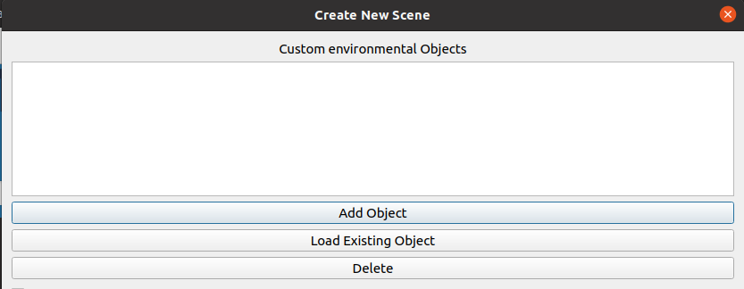
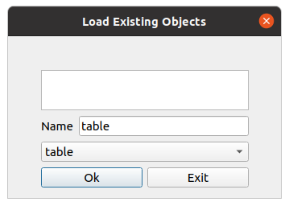
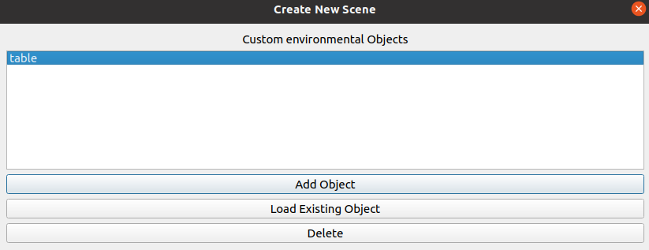

Loading an Object¶
This portion of the tutorial is to provide a guide on how to load the existing table object package that was previously generated by the workcell builder. If you have already created the table object in the same workcell builder session, skip this page and move on to: Adding External joints for Objects
In the main scene window, click on the load object button
Select the table object package and leave the name as “table”. Click the OK button.
If the object is successfully loaded, your “Environment objects” field should be displayed as shown.
Next step: Adding External joints for Objects